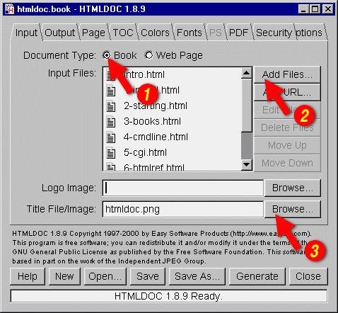
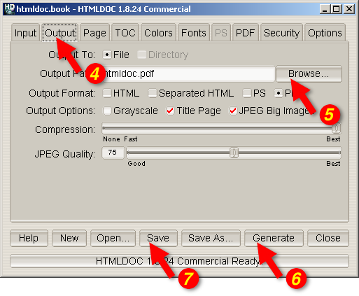

This chapter describes how to generate whole books from HTML files.
Overview
While HTMLDOC can convert web pages into PostScript and PDF files,
its real strength is generating index HTML, PostScript, or PDF books.
HTMLDOC uses HTML heading elements to delineate chapters and
headings in a book. The H1 element is used for chapters:
<HTML>
<HEAD>
<TITLE>The Little Computer that Could</TITLE>
</HEAD>
<BODY>
<H1>Chapter 1 - The Little Computer is Born</H1>
...
<H1>Chapter 2 - Little Computer's First Task</H1>
...
</BODY>
</HTML>
Sub-headings are marked using the H2 through H6
elements.

Figure 3-1: The Input Tab
Choosing HTML Files
Start by clicking on the Book radio button (1) to specify you'll
be converting a one or more HTML files into a book.
Then choose one or more files for conversion by clicking on the
Add Files... button (2). When the file chooser dialog appears,
pick the file(s) you wish to convert from the list of files and then
click on the OK button.
Selecting a Title Image
HTMLDOC supports generation of a title page with an image, the
title text, and other META information on it. Type the
title image filename into the Title Image field or click on
the Browse... button (3) to select a title image for your book.

Figure 3-2: The Output Tab
Setting the Output Format
The output format is set in the Output tab (4). Click on the
Output tab and then click on the HTML, PS,
or PDF radio buttons to set the output format.
Setting the Output File
Now that you've chosen an output format, type the name of the output
file into the Output Path field or click on the
Browse... button (5) to select the output file using the file
chooser.
Generating the Document
Once you have chosen the output file you can generate it by clicking on the
Generate button (6) at the bottom of the HTMLDOC window.
Saving Your Book
HTMLDOC can save the list of HTML files, the title image, and all other
options to a special .BOOK file so you can regenerate your book
when you make changed to your HTML files.
Click on the Save button (7) to save the current book to a file.